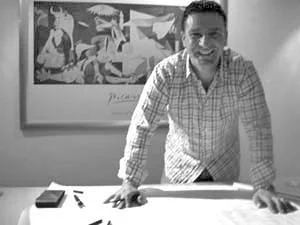
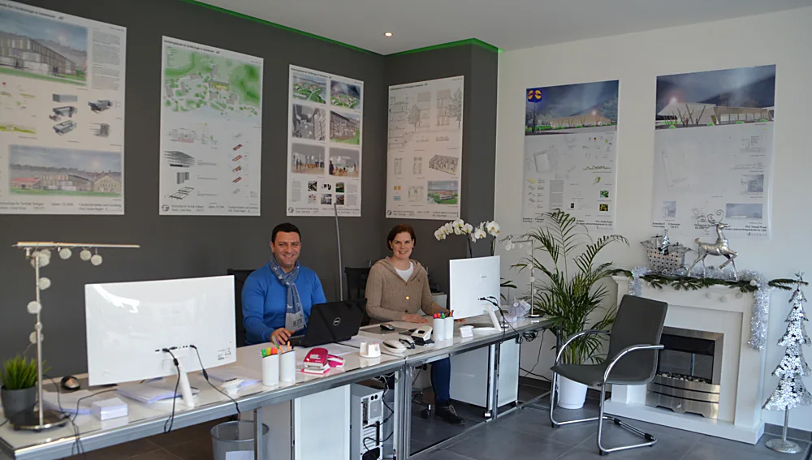
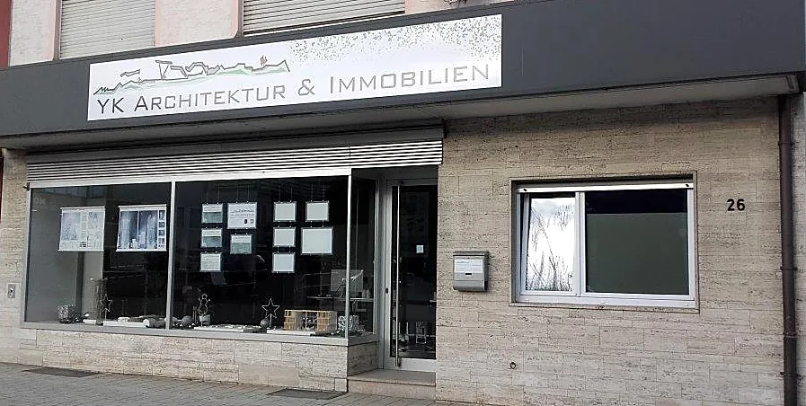

Schurr – Die Badgestalter
Neubau, Erweiterung sowie Ausstellungs- und Lagergebäude für einen Badausstatter. Von der ersten Planung bis zur Bauüberwachung aus einer Hand.
Leistungsphasen 1–8GewerbebauAusstellung
Dipl.-Ing. (FH) Yunus Emre Kaya, Architekt und Sachverständiger für Schäden an Gebäuden.
Von der Grundlagenermittlung bis zur Objektbetreuung, alles aus einer Hand.
Wir begleiten Ihr Projekt Tag für Tag, bis zur Übergabe.
Neubau, Erweiterung, Ausstellungs- und Lagergebäude, Leistungsphasen 1 bis 8.
Vom Einfamilienhaus bis zum Gewerbebau, vom Neubau bis zur Sanierung im Denkmalschutz: Wir planen, begleiten und bewerten.
Neubauten, Sanierungen und Umbauten aus über 15 Jahren, geplant und begleitet von YK Architektur.
Neubau, Erweiterung sowie Ausstellungs- und Lagergebäude für einen Badausstatter. Von der ersten Planung bis zur Bauüberwachung aus einer Hand.
Ein denkmalgeschütztes Anwesen aus Wohnhaus und Scheune wurde revitalisiert und ausgebaut. Entstanden sind 18 Einheiten, davon 9 senioren- und behindertengerechte Wohnungen in der ehemaligen Scheune mit innenliegendem Aufzug.
Moderne Innenräume mit Lichtvouten, Parkett und einem großzügigen Bad. Innenarchitektur, die Wohnen spürbar besser macht.
Komplette Erneuerung von Dach und Fassade eines Wohnhauses in der Senefelderstraße in Stuttgart, mit neuer Dachdeckung und frischer Farbgestaltung.
Ein 4-Familienhaus bekam neue Leitungen, Bäder und Küchen. Die Dachbühne wurde zur 2-Zimmer-Wohnung, die Sichtmauerwerk-Fassade saniert und das Dach nach EnEV gedämmt und neu gedeckt.
Pilotprojekt mit Wärmerückgewinnung, Photovoltaik, Fußbodenheizung und bis zu 4 m Raumhöhe, als Projektleiter der Phasen 1 bis 8. Dazu eine Fertigungshalle in Vaihingen an der Enz.
Eigene Renderings aus Wettbewerben, Studium und Planung: So sehen Bauherren ihr Projekt schon vor dem ersten Spatenstich.
Seit 2013 bin ich Sachverständiger für Schäden an Gebäuden, unter anderem im Auftrag der SV SparkassenVersicherung. Ich nehme Schäden auf, bewerte sie und erstelle Sanierungskonzepte, für Versicherungen und für Privatpersonen.

Dipl.-Ing. (FH) · Freier Architekt & Sachverständiger


Vom Bauzeichner über das Architekturstudium bis zum eigenen Büro: Ich kenne das Bauen von der Zeichnung bis zur Baustelle. Bei mir haben Sie einen persönlichen Ansprechpartner für Ihr Projekt.
Rufen Sie mich an oder schreiben Sie mir. Ich melde mich schnell bei Ihnen zurück.